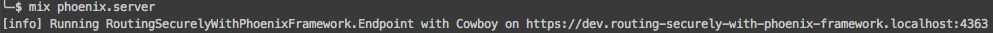

Austin Elixir
Routing Securely with Phoenix Framework
2015-09-02
Luke Imhoff
| luke_imhoff@rapid7.com | Kronic.Deth@gmail.com | |
| @limhoff-r7 | @KronicDeth | |
| @KronicDeth |
Outline
Installation
Node
| Source | Linux | Mac | Windows |
|---|---|---|---|
| nodejs.org |
tar.gz
|
pkg
|
msi
|
| homebrew | brew install node |
||
| apt-get |
sudo apt-get install nodejs-legacy
|
Installing Mix Archives
mix local.hex
mix archive.install https://github.com/phoenixframework/phoenix/releases/download/v0.17.0/phoenix_new-0.17.0.ez
New Project
-
mix phoenix.newOptions -
mix phoenix.new -
Fetch and Install Dependencies
- Run
mix phoenix.new Options
| Option | Description | Format | Example |
|---|---|---|---|
--app APP
|
The name of the OTP application | Atom |
routing_securely_with_phoenix_framework
|
--database DATABASE
|
Specify the database adapter for ecto |
|
|
--module MODULE
|
The name of the base module in the generated skeleton | Alias |
RoutingSecurelyWithPhoenixFramework
|
--no-ecto
|
Do not generate Ecto files for the model layer | ||
--no-brunch
|
Do not generate brunch files for static asset building |
mix phoenix.new

Fetch and Install Dependencies

Fetching and Install Dependencies for Clone
| Error | Solution |
|---|---|

|
mix deps.get
|

|
npm install
|
Run your application

Configuration
Default Configuration
| Environment | Module | key | File | Source Controlled? |
|---|---|---|---|---|
| All |
Endpoint
|
secret_key_base
|
config/config.exs
|
Yes |
dev
|
Repo
|
password
|
config/dev.exs
|
Yes |
prod
|
Endpoint
|
secret_key_base
|
config/prod.secret.exs
|
No |
prod
|
Repo
|
password
|
config/prod.secret.exs
|
No |
test
|
Repo
|
password
|
config/test.exs
|
Yes |
Remove shared secret_key_base

Secret configuration for each environment
config/prod.exs

config/config.exs


Generating new secret_key_base
iex(1)> length = 64
64
iex(2)> :crypto.strong_rand_bytes(length) |> Base.encode64 |> binary_part(0, length)
Generating database password
- Use a password manager
- Make the password long (> 16 characters)
- Replace password every 90 days

Dev Secrets
Repo configuration from config/dev.exs

config/dev.secret.exs
use Mix.Config
# In this file, we keep development configuration that
# you likely want to automate and keep it away from
# your version control system.
config :routing_securely_with_phoenix_framework, RoutingSecurelyWithPhoenixFramework.Endpoint,
secret_key_base: "SECRET_KEY_BASE"
# Configure your database
config :routing_securely_with_phoenix_framework, RoutingSecurelyWithPhoenixFramework.Repo,
adapter: Ecto.Adapters.Postgres,
database: "routing_securely_with_phoenix_framework_dev",
host: "127.0.0.1",
password: "PASSWORD",
size: 20, # The amount of database connections in the pool
username: "routing_securely_with_phoenix_framework_dev"
Test Secrets
Repo configuration from config/test.exs

config/test.secret.exs
use Mix.Config
# In this file, we keep development configuration that
# you likely want to automate and keep it away from
# your version control system.
config :routing_securely_with_phoenix_framework, RoutingSecurelyWithPhoenixFramework.Endpoint,
secret_key_base: "SECRET_KEY_BASE"
# Configure your database
config :routing_securely_with_phoenix_framework, RoutingSecurelyWithPhoenixFramework.Repo,
adapter: Ecto.Adapters.Postgres,
database: "routing_securely_with_phoenix_framework_test",
password: "PASSWORD",
pool: Ecto.Adapters.SQL.Sandbox,
username: "routing_securely_with_phoenix_framework_test"
Create PostgreSQL Users
| Termianl | pgAdmin | |
|---|---|---|
| 1 |
createuser --createdb --encrypted --no-createrole --no-superuser --pwprompt USERNAME
|
Start pgAdmin3 |
| 2 | Enter password | Connect to server |
| 3 | Enter password (again) | Right-click Login Roles |
| 4 | Click New Login Role | |
| 5 | Enter username |
|
| 6 | Change to Definition Tab | |
| 7 | Enter password | |
| 8 | Enter password (again) | |
| 9 | Change to Role Privileges Tab | |
| 10 | Click "Can create database" | |
| 11 | Click OK |
Create the database
mix ecto.create for new project

mix ecto.create in built project
TLS
- Overview
- Certificate Authority Key
- Self-Signing Certificate Authority
- Self-Signing Certificate Authority Distinguished Name
- Viewing your self-signed certificate
- Server Key
- Server Certificate Signing Request
- Server Certificate Signing Request Distinguished Name
- Signed Server Certificate
- Signing Server Certificate Request
- Trust Self-Signed Certificate Authority
- Fully-qualified Domain Setup
- Testing TLS Connection
Overview
- Transport Layer Security
- Successor to SSL (Secure Socket Layer) 3.0
- TLS 1.0 was defined in 1999
Self-Signing Certificate Authorithy Distinguished Name

Viewing your self-signed certificate
openssl x509 -in certificate-authority.crt -noout -text

Server Key
openssl genrsa -out server-${MIX_ENV}.key 4096
Server Certificate Signing Request
openssl req -new -key server-${MIX_ENV}.key -out server-${MIX_ENV}.csr
Server Certificate Signing Request Distinguished Name

Signing Server Certificate Request
| Option | Argument | Description |
|---|---|---|
x509
|
Certificate display and signing utility | |
-CA
|
The Certificate Authority certificate | |
-CAcreateserial
|
Create file for keeping track of CA issued certificate serial numbers if it does not exist and assign this certificate the next serial number. | |
-CAkey
|
certificate-authority.key
|
Certificate Authority private Key for signing request |
-days
|
90
|
Days the server certificate is valid |
-in
|
server-${MIX_ENV}.csr
|
Request to be signed |
-out
|
server-${MIX_ENV}.crt
|
Signed certificate output file |
-req
|
Sign a certificate request | |
-sha256
|
Sign with SHA256 instead of SHA1 |
Fully Qualified Domain Setup
sudo vim /etc/hosts
- Add
127.0.0.1 dev.routing-securely-with-phoenix-framework.localhost
- Add
127.0.0.1 prod.routing-securely-with-phoenix-framework.localhost
- Add
127.0.0.1 test.routing-securely-with-phoenix-framework.localhost
- Restart Browsers
Testing TLS connection
-
Start Phoenix: mix phoenix.server - Open URL printed by Cowboy
-
Verify connection is private 
Sources
- Phoenix Framework Installation Guide
-
mix help phoenix.new - Creating your own SSL Certificate Authority
- MIT openssl configuration file
- Key Usage docs
- Metasploit Pro